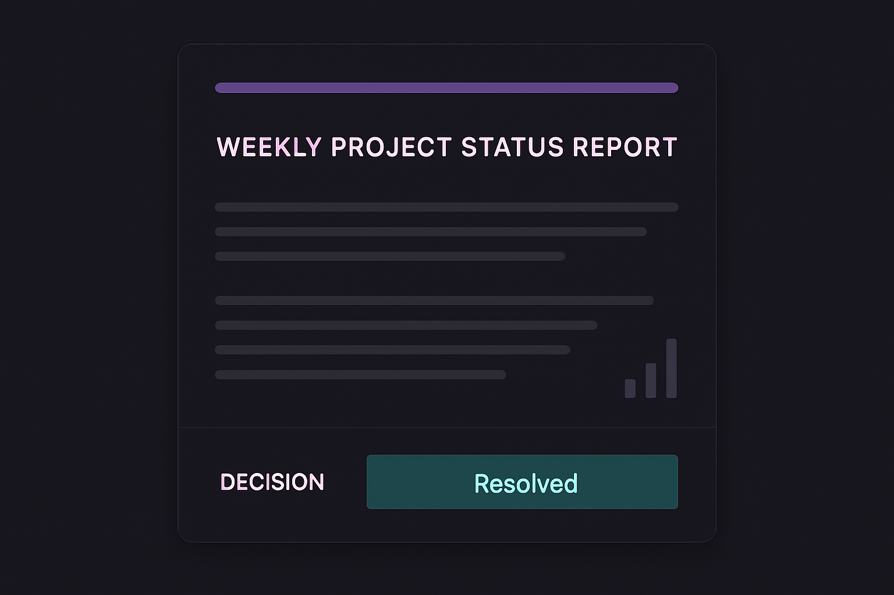
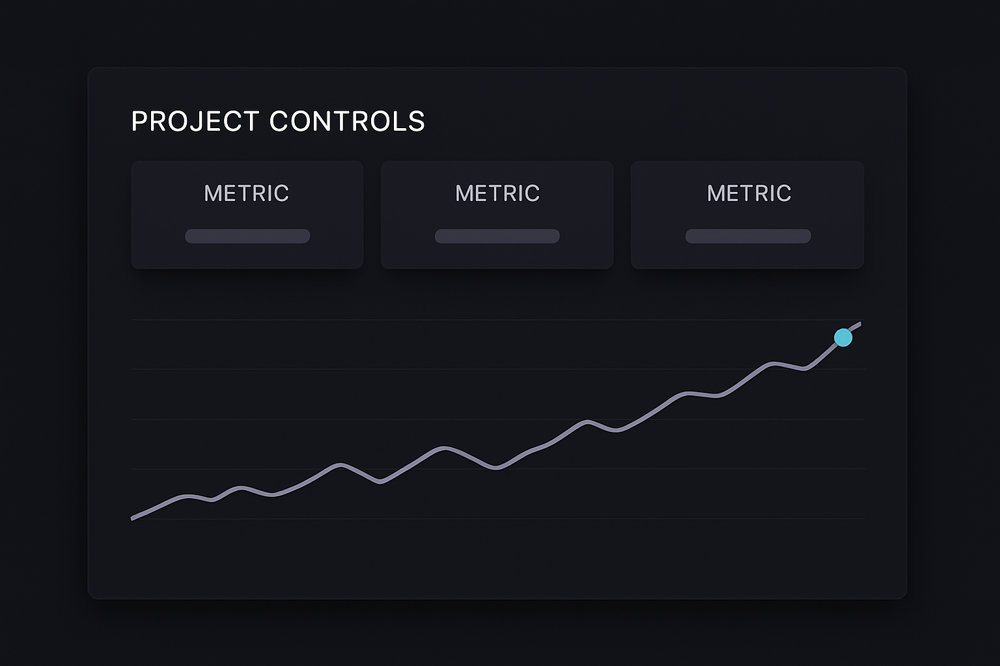

Services / PMO Consulting
PMO Consulting
Improve before replacing: strengthening project controls and delivery capability through practical, evidence-based improvement — and the intelligence layer that makes it visible.
PMOlogy's PMO consulting focuses on strengthening the systems already in place — project controls, scheduling, reporting, and governance — rather than starting over. The goal is practical impact: better decisions, stronger control, and reduced manual effort, delivered through targeted improvements rather than a wholesale system replacement.
This work draws on deep understanding of how PMOs, project controls teams, engineering leaders, and delivery organizations actually operate — connecting recommendations directly to real project-management and project-control needs, not generic best practice for its own sake.
Illustrative pattern — figures shown here are directional placeholders, not verified client metrics.
What we strengthen
Visibility across schedule, cost, risk, and delivery.
Every engagement starts with the controls already in place. We tighten schedules, cost baselines, risk registers, and status reporting into a single, reliable picture — one leadership can actually act on.
Schedule & sequencing
Realistic, well-sequenced schedules that reflect how the work is actually delivered — not a plan that only looks tidy on paper.
Cost control & baselines
Cost baselines and forecasts tied directly to schedule and scope, so variance is visible before it becomes a problem.
Risk registers & mitigation
Risk registers that are actively maintained and connected to delivery decisions, not a document updated once a quarter.
Progress tracking
Consistent, verifiable progress measurement across the full portfolio — not self-reported percent-complete.
Reporting & forecasting
Reporting and forecasting built from the same underlying data, so every audience sees a consistent picture.
Delivery visibility & governance
Clear lines of sight from working teams to leadership, with governance proportionate to the risk actually being managed.
Turn project data into decisions
From reactive reporting to proactive control.
The same schedules, dashboards, and status reports already in use — connected, tightened, and read as one picture instead of three separate ones.

Status report. Manual, scattered narrative — resolved into one clear line leadership can act on.

Dashboard. Schedule, cost, and risk read together, not three separate exports.
P6-style schedule. Critical path, baseline slip, and the data-date line surfaced — the same detail a real P6 export carries, not buried in a spreadsheet.
Illustrative mockups — not real client reports, dashboards, or schedules.
How we work
Reliable, practical, and built around your reality.
Reliability
Dependable analysis, delivery, and follow-through — robust, practical solutions suited to real operating environments.
Practical impact
Improvements that create visible business value quickly, without unnecessary cost or disruption.